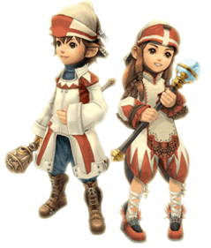

21 |
Métiers ("Jobs") |
 |
Les aventuriers peuvent se spécialiser dans certains rôles appelés "jobs" (métiers). Chaque nouvel aventurier débute par le métier de guerrier ("warrior").
Au fur et à mesure de la progression dans le jeu, certains donjons apparaîtront où la seule force physique ne suffira pas. Pour en venir à bout, il vous faudra peut-être demander à certains aventuriers de changer de métier. Pour que les aventuriers puissent changer de métier, le royaume doit disposer des structures appropriées. Une fois ces bâtiments construits, vous pouvez passer un ordre de changement de métier afin de rassembler des aventuriers susceptibles de changer de spécialité. Ci-dessous figurent les quatre "métiers" et le bâtiment correspondant. |
|
 ● Warrior (Guerrier)
● Warrior (Guerrier) ● White Mage (Mage blanc)
| |
(Mage noir) |
 ● Black Mage
● Black Mage  ● Thief (Voleur)
● Thief (Voleur)À la fois explorateurs et chasseurs de trésors, les voleurs peuvent ouvrir les serrures des coffres et permettre à une équipe d'esquiver les combats inutiles grâce à leur don pour la furtivité. Pour transformer un aventurier en voleur, vous devez disposer d'un "Gaming Hall" (Salle de jeux). |
Les aventuriers rassemblés autour d'un ordre de changement de métier vous demanderont si vous souhaitez qu'ils endossent le rôle réclamé.
Remarque : si un aventurier change de métier, il perdra toutes les compétences acquises dans sa précédente profession. Réfléchissez donc bien avant de changer. |
 |
 |
 |